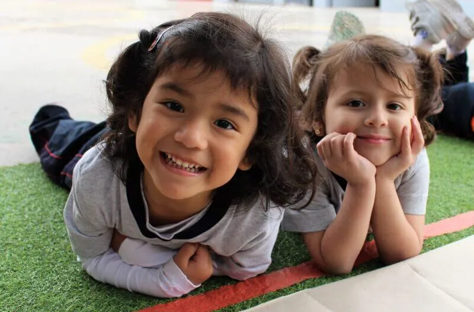
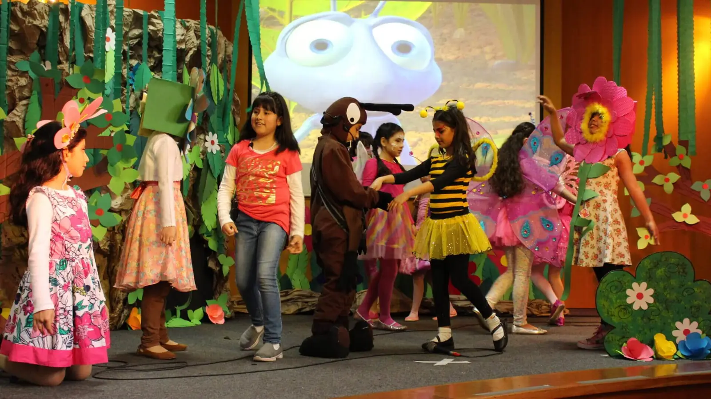
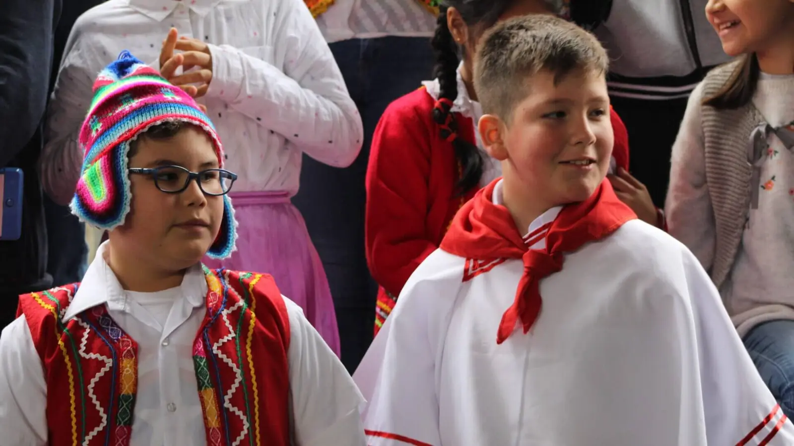
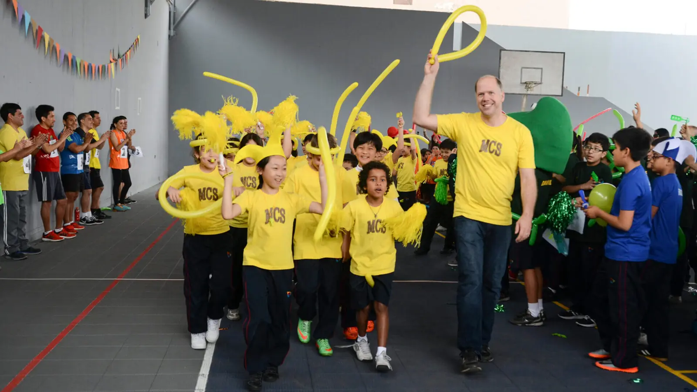
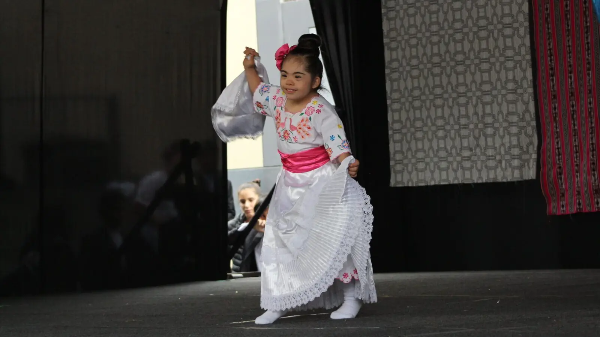

Early Years
3 años – 5 años
Conocer más →



Nos llena de alegría tener la oportunidad de recibirlos en nuestra comunidad educativa, un lugar donde la excelencia académica, el desarrollo integral y la fe de cada estudiante son los pilares fundamentales de nuestra misión.
Como institución cristiana, nos comprometemos a ofrecer un ambiente donde se fomente no solo el conocimiento académico, sino también los valores cristianos, el amor por el prójimo, el respeto, la integridad y la responsabilidad.
En Monterrico Christian School (MCS) preparamos a los estudiantes para que vivan con propósito, sirvan con corazón y se conviertan en líderes que impacten positivamente en la sociedad. A través de programas académicos de alta calidad y una formación espiritual sólida, buscamos que cada uno de nuestros estudiantes crezca no solo en conocimiento, sino también en su relación con Dios y con los demás.
Estamos listos para acompañarlos en este hermoso viaje de aprendizaje y crecimiento. ¡Juntos, vamos a caminar hacia un futuro lleno de bendiciones y logros!

3 años – 5 años
Conocer más →
1.er grado – 6.º grado
Conocer más →
7.º grado – 11.º grado
Conocer más →Nuestro programa de inmersión en el idioma inglés (EIP) se inicia en el nivel inicial, este programa cuenta con la participación de maestras nativas en dicho idioma, en un ambiente preparado para que el estudiante desarrolle su lenguaje utilizando diferentes métodos y herramientas de aprendizaje.
La educación basada en valores cristianos permite a los estudiantes desarrollarse como personas íntegras, capaces de enfrentar los retos del presente y del futuro. Es nuestra convicción formar personas responsables delante de Dios, consigo mismas, con su familia y la sociedad.
Estamos comprometidos en proveer el mejor ambiente, recursos, calidad profesional y de enseñanza para que nuestros estudiantes alcancen su mayor potencial, utilizando los conocimientos adquiridos así como sus dones y talentos, formamos estudiantes con altos estándares académicos.
Monterrico Christian School existe para glorificar a Dios a través de la educación.
La cual nos permite conocer y atender las necesidades de nuestros estudiantes, desde el área cognitiva, emocional, así como también espiritual; entendiendo que cada uno tiene su propia forma y ritmo de aprendizaje.

Se realizan durante todo el año y dentro del horario regular de clases, garantizando la actividad física en nuestros estudiantes. Contamos con áreas apropiadas para la realización de diferentes disciplinas. Promovemos un estilo de vida saludable.

Contamos con un laboratorio de cómputo y un laboratorio móvil, el cual se traslada a las aulas para servir como una herramienta más para el mejor aprendizaje de contenidos por parte de nuestros estudiantes.

Buscamos fomentar la creatividad y la sensibilidad artística en los estudiantes. El arte les permite desarrollar su pensamiento crítico, habilidades cognitivas y motoras como la memoria y la coordinación. Ellos disfrutan de clases de artes plásticas, música y teatro.

Enseñamos a nuestros estudiantes a amar y ayudar al prójimo, por esta razón ellos participan en visitas misioneras, así como también ellos planean, organizan y desarrollan programas que ayudarán a suplir las necesidades de una comunidad.